항공산업기사 (2008-03-02 기출문제)
1과목: 항공역학
1. 지구의 대기는 4개의 기류층으로 구성되어 있다. 지구에서 가장 가까운 층부터 기류의층의 순서는?
- 성층권, 대류권, 중간권, 외기권
- 대류권, 성층권, 중간권, 외기권
- 대류권, 중간권, 성충권, 외기권
- 성층권, 중간권, 대류권, 외기권
(정답률: 91%)

2. 착륙 접지시 역추력을 발생시키는 순 감속력(Fa)에 대한 식을 가장 올바르게 나타낸 것은? (단, 추력 : T, 항력 : D, 무게 : W, 양력 : L, 활주로마찰계수 : μ)
- Fa = T-D+μ(W-L)
- Fa = T+D+μ(W+L)
- Fa = T-D+μ(W+L)
- Fa = T+D+μ(W-L)
(정답률: 66%)
3. 프로펠러 항공기가 최대활공시간으로 비행할 수 있기 위한 조건은?
- (
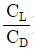
) 이 최대 - (
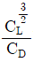
) 이 최대 - (
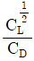
) 이 최대 - (
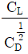
) 이 최대
(정답률: 68%)
4. 프로펠러의 효율은 진행율에 비례하게 되는데 진행율이란 무엇인가?
- 추력과 토그와의 비율
- 유효피치와 프로펠러 지름과의 비율
- 유효피치와 추력과의 비율
- 기하피치와 프로펠러 지름과의 비율
(정답률: 81%)
5. 키놀이 운동의 고유 진동수에 가깝게 비행기를 조종하였을 때 비행기에 나타나는 현상으로 가장 올바른 것은?
- 비행기는 감쇠 진동을 하게 된다.
- 비행기는 발산 진동을 하게 된다.
- 동적으로 안정한 상태로 된다.
- 비행기로부터 에너지가 발산된다.
(정답률: 62%)
6. 최대 양항비가 12 인 항공기가 고도 2400m 에서 활공을 시작했다. 최대 수평도달 거리[m]는?
- 14400
- 24000
- 28800
- 48000
(정답률: 82%)
7. 날개면적인 100m2 인 비행기가 400km/h의 속도로 수평 비행하는 경우에 이항공기의 중량은 약 몇 kg인가? (단, 양력계수는 0.6, 공기밀도는 0.125kgfㆍs2/m4이다.)
- 60000
- 46300
- 23300
- 15600
(정답률: 73%)
8. 어떤 비행기가 1000km/h 의 속도로 10000m 상공을 비행하고 있다. 이 때 마하수는 약 얼마인가? (단, 10000m 상공에서의 음속은 300m/s 이다.)
- 0.50
- 0.93
- 1.20
- 3.33
(정답률: 80%)
9. 유체의 흐름 중 층류 경계층과 난류 경계층을 비교한 설명으로 가장 관계가 먼 것은?
- 난류 경계층의 두께는 층류 경계층의 두께보다 두껍다.
- 층류 경계층에서의 표면마찰항력은 난류 경계층보다 크고 압력항력은 적다.
- 임계레이놀즈수란 층류에서 난류로 변하는 천이현상이 일어나는 레이놀즈수를 말한다.
- 난류 경계층의 속도구배와 층류 경계층의 속도구배는 다르다.
(정답률: 67%)
10. 헬리콥터 회전날개(Rotor Blade)에 적용되는 기본 힌지(Hinge)로 가장 올바른 것은?
- 플래핑(Flapping)힌지, 페더링(Feathering)힌지, 전단(Shear)힌지
- 플래핑힌지, 페더링힌지, 리드래그(Lead-Lag)힌지
- 페더링힌지, 리드래그힌지, 전단힌지
- 플래핑힌지, 리드래그힌지, 경사(Slope)힌지
(정답률: 88%)
11. 프로펠러의 깃의 미소길이 dr에 발생하는 미소양력이 dL, 항력이 dD 이고, 이 때의 유효유입각(effective advance angle)이 α 라면 이 미소길이에서 발생하는 미소추력 dT는?
- dT = dL cosα - dD sinα
- dT = dL cosα + dD sinα
- dT = dL sinα - dD cosα
- dT = dL sinα + dD cosα
(정답률: 62%)
12. NACA 2415에서 “2”는 무엇을 의미하는가?
- 최대캠버가 시위의 2%
- 최대두께가 시위의 2%
- 최대두께가 시위의 20%
- 최대캠버의 위치가 시위의 20%
(정답률: 82%)
13. 배런스 탭(Balance Tab)에 대한 설명으로 옳은 것은?
- 조종면과 반대로 움직여 조종력을 경감시켜 준다.
- 조종면과 같은 방향으로 움직여 조종력을 경감시켜 준다.
- 조종면과 반대로 움직여 조종력을 제로(Zero)로 만들어 준다.
- 조종면과 같은 방향으로 움직여 조종력을 제로(Zero)로 만들어 준다.
(정답률: 74%)
14. 헬리콥터에서 동시 피치조종(collective control)을 가장 올바르게 설명한 것은?
- 전진하는 주회전날개 깃의 피치를 증가시킨다.
- 후진하는 주회전날개 깃의 피치를 증가시킨다.
- 주회전날개 깃 모두의 피치를 동시에 증가, 감소 시킨다.
- 주회전날개 깃의 피치를 주기적으로 증가, 감소 시킨다.
(정답률: 81%)
15. 공기력 중심과 풍앞 중심에 대한 설명 중 가장 올바른 것은?
- 공기력 중심과 풍앞 중심은 항상 일치된다.
- 받음각의 변화에도 불구하고 피칭 모멘트가 일정한 점을 공기력 중심이라 한다.
- 받음각의 변화에도 불구하고 피칭 모멘트가 일정한 점을 풍앞 중심이라 한다.
- 양력과 항력의 합성력이 날개시위 선상의 어떤 점에 작용할 때 그 점에서의 피칭 모멘트가 0 이라면 그 점은 날개의 공기력 중심이다.
(정답률: 77%)
16. 항공기 무게가 5000kg 이고, 해발고도에서 잉여마력이 50HP 일 때, 이 비행기의 상승률은 몇 m/min 인가?
- 35
- 45
- 51
- 62
(정답률: 54%)
17. 항공기가 트림(trim) 상태로 비행한다는 것은?
- CL = CD 인 상태
- Cmcg ＞0 인 상태
- Cmcg = 0 인 상태
- Cmcg ＜ 0 인 상태
(정답률: 76%)
18. 다음 중 프로펠러의 효율(η)을 잘못 표현한 것은? (단, T : 추력, D : 지름, V : 비행속도, J : 진행율, n : 회전수, P : 동력, Cp : 동력계수, Cr : 추력계수)
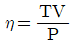
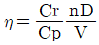
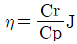
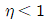
(정답률: 54%)
19. 비행기의 무게가 2000kgf 이고, 큰날개 면적이 30m2 이며 해발고도 (공기밀도 : 1/8kgfㆍs2/m4)엣의 실속속도가 120km/h 인 비행기의 최대 양력계수(CLmax는 약 얼마인가?
- 0.96
- 1.24
- 1.45
- 1.67
(정답률: 61%)
20. 날개 끝 실속을 방지하기 위한 노력이 아닌 것은?
- 날개 끝 부분에 Slot 를 설치한다.
- Stall Fence 를 장착한다.
- 날개 끝으로 갈수록 Wash out 을 준다.
- 받음각을 크게 한다.
(정답률: 71%)
2과목: 항공기관
21. 다음 중 가스 터빈 엔진에 있어 트림(trim)의 가장 큰 목적은?
- 압축비를 높이는 것
- 배기압력을 조절하는 것
- 드로틀 레버를 서로 일치시키는 것
- 엔진의 정해진 rpm에서 정격 추력을 확립하는 것
(정답률: 79%)
22. 항공기 왕복엔진에 사용되는 가솔린 연료의 연소에서 열해리에 대한 설명으로 가장 올바른 것은?
- 열해리는 연료의 발열량으로 표시한다.
- 열해리가 발생하면 연소가스 온도는 저하된다.
- 열해리는 연소온도가 낮을 수록 많이 발생한다.
- 열해리는 고온에서 CO 와 O2, 그리고 H2 와 O2 가 CO2 와 H2O 로 되며, 열을 방출하는 것이다.
(정답률: 47%)
23. 가솔린 엔진에서 노킹(knocking)을 방지하기 위한 방법으로 틀린 것은?
- 제폭성이 좋은 연료를 사용한다.
- 화염전파거리를 짧게 해준다.
- 착화지연을 길게 한다.
- 연소속도를 느리게 한다.
(정답률: 54%)
24. 왕복엔진에서 밸브 오버랩(Valve overlap)을 두는 이유로 틀린 것은?
- 냉각을 돕는다.
- 체적효율을 향상시킨다.
- 밸브의 온도를 상승시킨다.
- 배기가스를 완전히 배출시킨다.
(정답률: 71%)
25. 보일ㆍ샤를의 법칙을 설명한 내용으로 가장 올바른 것은?
- 체적은 압력에 반비례하고, 절대온도에 비례한다.
- 체적은 압력에 비례하고, 절대온도에도 비례한다.
- 체적은 압력에 비레하고, 절대온도에 반비례한다.
- 체적은 압력에 반비례하고, 절대온도에도 반비례한다.
(정답률: 55%)
26. 복식 연료노즐에 대한 설명 중 가장 관계가 먼 것은?
- 1차 연료는 노즐의 가장자리 구멍으로 분사되고, 2차 연료는 중심에 있는 작은 구멍을 통하여 분사된다.
- 2차 연료는 고속회전시 1차 연료보다 비교적 멀리 분사된다.
- 공기를 공급하여 미세하게 분사되도록 한다.
- 1차 연료는 넓은 각도로 분사된다.
(정답률: 64%)
27. 피스톤 오일 링(piston oil ring)에 의하여 모여진 여분의 오일은 다음 중 어느 경로를 통하여 흐르는가?
- 피스톤 핀 중앙에 뚫린 구멍으로
- 피스톤 오일 링 홈에 있는 드릴 구멍을 통하여
- 피스톤 핀에 있는 드릴 구멍을 통하여
- 실린더 벽면의 작은 틈을 타고
(정답률: 77%)
28. 정속 프로펠러를 장착한 왕복 엔진의 출력감소를 위한 작동순서로 올바른 것은?
- rpm 을 감소시킨 다음에 흡기다기관 압력을 감소 시킨다.
- rpm 을 증가시킨 다음에 프로펠러 Control 을 조정한다.
- 흡기다기관 압력을 감소시킨 다음에 프로펠러로 rpm 을 감소시킨다.
- 흡기다기관 압력을 증가시킨 다음에 드로틀(thro-ttle)을 줄인다.
(정답률: 62%)
29. 최근 항공기 엔진의 추력조정계통(Thrust Control System)에서 리솔버(Resolver)에 대한 설명으로 옳은 것은?
- 추력레버(Thrust lever)의 움직임을 전기적인 신호(Signal)로 바꾸어 준다.
- 추력레버(Thrust lever)의 상부에 장착되어 있다.
- 추력레버(Thrust lever)가 최대추력 위치를 벗어나지 않게 스톱퍼(Stopper)역할을 한다.
- 주로 유압-기계식(Hydro-Mechanical Type)의 연료조정장치 계토에 사용된다.
(정답률: 54%)
30. 제동마력을 구하는 식으로 옳은 것은? (단, P : 제동평균 유효압력[psi], K : 실린더수, L : 행정거리 [ft],
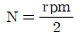
, A : 피스톤단면적[ in2], b : 제동마력[HP])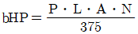
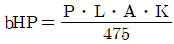
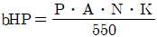
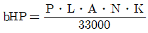
(정답률: 78%)
31. 프로펠러의 역추력(Reverse Thrust)은 어떻게 발생 하는가?
- 프로펠러를 시계방향으로 회전시킨다.
- 프로펠러를 반시계 방향으로 회전시킨다.
- 부(Negative)의 블레이드 각으로 회전시킨다.
- 정(Positive)의 블레이드 각으로 회전시킨다.
(정답률: 82%)
32. 열기관 사이클 중에서 이론적으로 열효율이 가장 좋은 가상적인 사이클은?
- 카르노 사이클
- 블레이톤 사이클
- 오토 사이클
- 디젤 사이클
(정답률: 64%)
33. 왕보기관(Reciprocating Engine)에서 과급기(super-charger)를 장착하는 주된 목적은?
- 연료소비율을 향상시키기 위하여
- 엔진의 효율을 향상시키기 위하여
- 착륙효율을 향상시키기 위하여
- 고공에서의 최대출력을 지속시키기 위하여
(정답률: 71%)
34. 축류형 압축기의 실속(Stall) 방지장치가 아닌 것은?
- 다축 기관
- 가변 스테이터
- 블리드 밸브
- 공기 흡입덕트
(정답률: 61%)
35. 다음 중 엔진의 추력을 나타내는 이론과 관계있는 것은?
- 뉴톤의 제1법칠
- 파스칼의 원리
- 베르누이의 원리
- 뉴톤의 제2법칙
(정답률: 64%)
36. 피스톤의 지름이 16cm 인 피스톤에서 65kgf/cm2 의 가스 압력이 작용하면 피스톤에 미치는 힘(ton)은 약 얼마인가?
- 10.06
- 11.06
- 12.06
- 13.06
(정답률: 56%)
37. 가스터빈 기관의 연료조절 장치의 수감부분에서 수감하는 주요 작동변수가 아닌 것은?
- 기관의 회전수
- 압축기 입구온도
- 연료펌프의 출구압력
- 동력 레버의 위치
(정답률: 51%)
38. 가스터빈기관의 윤활유 펌프에 대한 설명으로 틀린 것은?
- 압력 펌프는 배유 펌프보다 용량이 2배 이상 크다.
- 윤활유 펌프의 형식에는 기어형, 베인형, 제로터형 등이 있다.
- 윤활유를 윤활이 필요한 각 분위에 일정하게 공급하는 펌프는 압력 펌프이다.
- 각각의 윤활유 섬프에 모여진 윤활유를 윤활 탱크로 돌려보내는 펌프는 배유 펌프이다.
(정답률: 73%)
39. [그림]은 오토 사이클의 P-V 선도이다. 3~4 과정은?
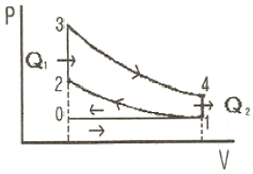
- 단열팽창
- 단열압축
- 정적열
- 정적방열
(정답률: 71%)
40. 다음 중 가스터빈 오일의 구비조건으로 틀린 것은?
- 점성이 높을 것
- 유동점이 낮을 것
- 인화점이 높을 것
- 거품 저항성이 클 것
(정답률: 64%)
3과목: 항공기체
41. 폰이 20cm. 두께가 2mm 인 알루미늄판을 [도면]과 같이 구부리고자 한다. 필요한 알루미늄판의 set back은 얼마인가?
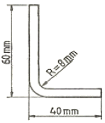
- 8mm
- 10mm
- 12mm
- 14mm
(정답률: 76%)
42. [그림]과 같은 응력-변형률곡선(STRESS-STRAIN)에서 파단점(FRACTURE POINT)은? (단, σ는 응력, ε은 변형률을 나타낸다.)
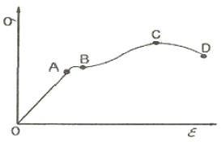
- A
- B
- C
- D
(정답률: 73%)
43. 항공기 날개구조에서 리브(Rib)의 기능을 가장 올바르게 설명한 것은?
- 날개의 곡면상태를 만들어주며, 날개의 표면에 걸리는 하중을 스파에 전달시킨다.
- 날개에 걸리는 하중을 스킨에 분산시킨다.
- 날개의 스팬(span)을 늘리기 위하여 사용되는 연장 부분이다.
- 날개 내부구조의 집중응력을 담당하는 골격이다.
(정답률: 83%)
44. [그림]과 같은 외팔보의 자유단에 500kgf, 중앙점에 400kgf 의 하중이 작용할 때 고정단 A 점의 굽힘 모멘트는 몇 kgfㆍcm 인가?
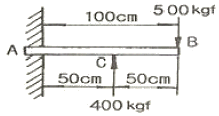
- 10000
- 20000
- 30000
- 40000
(정답률: 52%)
45. 엔진나셀(Engine Nacelle)의 기본 구성이 아닌 것은?
- 카울링(COWLING)
- 방화벽(FIRE WALL)
- 구조부재(STRUCTURE)
- 콘(CONE)
(정답률: 77%)
46. 항공기 위치 표시방법 중 버톡라인(Buttock line)은?
- 비행기의 전방에서 테일콘(Tail cone)까지 연장된 선과 평행하게 측정한다.
- 비행기 수직 중심선에 평행하게 좌, 우측의 너비를 측정한 것이다.
- 항공기 동체의 수평면으로부터 수직으로 높이를 측정 하는 것이다.
- 날개의 후방빔에 수직하게 밖으로부터 안쪽가장자리를 측정한 것이다.
(정답률: 76%)
47. AI 표면을 양극산화처리하여, 표면에 방식성이 우수하고 치밀한 산화 피막이 만들어지도록 처리하는 방법이 아닌 것은?
- 수산법
- 황산법
- 크롬산법
- 석출경화법
(정답률: 78%)
48. 합금강의 종류와 분류에서 SAE(Society of Automotive engineer) 4130 을 올바르게 설명한 것은?
- 고탄소강으로 탄소 함유량 30% 를 나타낸다.
- 저탄소강으로 탄소 함유량 0.3% 를 나타낸다.
- 크롬-몰리브덴강으로 몰리브덴 3% 와 탄소 30% 를 나타낸다.
- 크롬-몰리브텐강으로 몰리브덴 1% 와 탄소 0.3% 를 나타낸다.
(정답률: 71%)
49. [그림]의 클레비스 볼트(Clevis Bolt)에 대한 설명으로 가장 올바른 것은?
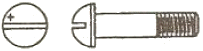
- 전단하중이 걸리는 곳에 사용한다.
- 인장하중이 걸리는 곳에 사용한다.
- 볼트의 머리는 6각 또는 12각으로 되어있는 것도 있어 렌치를 이용하여 장착한다.
- 압축하중과 인장하중이 동시에 걸리는 곳에 사용한다.
(정답률: 75%)
50. [그림]과 같은 V-n 선도에서 아무리 급격한 조작을 하여도 구조상 안전한 속도를 나타내는 지점은?
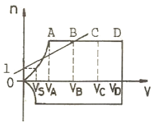
- VA
- VB
- VC
- VD
(정답률: 74%)
51. 케이블 터미널 핏팅(fitting) 연결방법에서 원래 부품과 거의 같은 강도를 보장할 수 있는 방법은?
- 5-tuck woven splice 방법
- 스웨이징(swaging) 방법
- wrap-solder cable splice 방법
- 5-tuck woven splice 방법과 wrap-solder cable splice 방법
(정답률: 79%)
52. 어떤 온도에서 일정한 응력이 가해질 때 시간에 따라 계속 변형율이 증가한다. 이와 같이 시간에 따라서 변형량을 측정하는 것은?
- 피로(fatigue)시험
- 탄성(elasticity)시험
- 크리프(creep)시험
- 천이점(transition point)시험
(정답률: 90%)
53. 항공기 랜딩기어에 사용하는 시미댐퍼(shimmy Damper)의 주된 목적은?
- 항공기가 활주 중에 기체 축을 중심으로 좌우로 흔들리는 시미현상을 감쇠해준다.
- 항공기가 활주 중에 타이어의 공기압을 일정하게 하는 역할을 한다.
- 노스 스티어링이 작동하지 않을 때 작동기 역할을 한다.
- 활주거리를 짧게 하여 준다.
(정답률: 91%)
54. 평형 방정식에 관계되는 지지점과 반력에 대한 설명 중 가장 올바른 것은?
- 룰러 지지점은 수평 반력만 발생한다.
- 힌지 지지점은 1개의 반력이 발생한다.
- 고정 지지점은 수직 및 수평반력과 회전모멘트 등 3개의 반력이 발생한다.
- 룰러 지지점은 수직 및 수평방향으로 구속되어 2개의 반력이 발생한다.
(정답률: 75%)
55. 판재에 드릴작업을 하고 난 후 리이머 작업을 하는 주된 목적은?
- 구멍크기를 약간 키우기 위해서이다.
- 드릴로 뚫은 구멍의 안쪽의 부식을 제거하는 작업이다.
- 드릴로 뚫은 구멍의 안쪽을 매끈하게 가공하는 작업이다.
- 장착할 리벳의 크기와 드릴구멍과 차이가 날 때 하는 작업니다.
(정답률: 91%)
56. 항공기에 사용되는 브레이크 계통의 기본형태가 아닌 것은?
- 독립형 계통(Independent system)
- 파워 승압형 계통(Power boost system)
- 파워 조정 계통(Power control system)
- 디부스터 실린더 계통(Debooster cylinder system)
(정답률: 58%)
57. 0.040 인치 두께인 2개의 판을 접합하고자 한다. 이 때 리벳의 길이는 얼마인 것이 가장 적절할가?
- 0.080 인치
- 0.120 인치
- 0.160 인치
- 0.260 인치
(정답률: 41%)
58. 용접 작업에 사용되는 산소ㆍ아세틸렌 토치 팁(Tip)의 재질로 가장 적당한 것은?
- 납 및 납 합금
- 구리 및 구리 합금
- 마그네슘 및 마그네슘 합금
- 알루미늄 및 알루미늄 합금
(정답률: 78%)
59. 다음 중 평와셔에 대한 설명으로 틀린 것은?
- 구조물, 장착 부품의 조임면의 부식을 방지한다.
- 볼트, 너트를 조일 때에 구조물, 장착 부품을 보호한다.
- 구조물이나 장착 부품의 조이는 힘을 한곳에 집중 시킨다.
- 볼트, 너트의 코터 핀 구멍 위치 등의 조정용 스페이서(spacer)로 사용한다.
(정답률: 78%)
60. 항공기에 사용되는 복합재료인 FRP 와 FRM 의 특성을 비교한 것 중 틀린 것은?
- 피로 강도가 모두 뛰어나다.
- 비강도와 비강성이 모두 높다.
- 내열 강도는 FRP 가 높고, FRM 은 낮다.
- 층간의 선단 강도는 FRP 가 낮고, FRM 은 높다.
(정답률: 70%)
4과목: 항공장비
61. 3상 교류발전기에서 발전된 전압을 정의 방향으로 순차적으로 모두 합하면 얼마가 되겠는가?
- 0
- 1
- √3
- 3
(정답률: 62%)
62. 다음 중 니켈-카드윰 축전지에 대한 설명으로 틀린 것은?
- 전해액은 질산계의 산성액이다.
- 고부하 특성이 좋고 큰전류 방전시에는 안정된 전압을 유지한다.
- 진동이 심한 장소에 사용 가능하고, 부식성 가스를 거의 방출하지 않는다.
- 한 개의 셀(cell)의 기전력은 무부하 상태에서 1.2 ~ 1.25V 정도이다.
(정답률: 70%)
63. 다음의 Thermo-couple 조합 중 그 측정온도가 가장 높은 것은?
- 크로멜-알루멜
- 철-콘스탄탄
- 구리-콘스탄탄
- 알루멜-콘스탄탄
(정답률: 71%)
64. 다음 중 화재탐지기로 사용하는 것이 아닌 것은?
- 온도상승률 탐지기
- 스모그 탐지기
- 이산화탄소 탐지기
- 과열 탐지기
(정답률: 77%)
65. 항공기 유압회로에서 프라이어리티 밸브(Priority Valve)에 대한 설명으로 옳은 것은?
- 유로를 선택하고 작동유의 공급과 리턴 회로를 만들고 기구의 작동 방향을 결정하는 밸브이다.
- 한 방향으로 자유로이 작동유를 흐르게 하지만 반대 방향으로 흐르지 못하게 하는 밸브이다.
- 작동유 압력이 일정 압력 이하로 떨어지면 유로를 차단하는 기능을 가진 밸브이다.
- 한 개의 선택 밸브에 의해 복수의 기구를 작동시켰을 때, 그 작동 순서를 결정하는 밸브이다.
(정답률: 47%)
66. 항공기의 전기회로에서 사용되는 스위치의 설명 중 틀린 것은?
- 푸시버튼스위치(push button switch)는 접속방식에 따라 SPUT, SPWT, DPUT, DPWT 가 있다.
- 토글스위치(toggle switch)는 항공기에서 가장 많이 사용되는 스위치로서, 운동부분이 공기 중에 노출되지 않도록 케이스로 보호되어 있다.
- 회선선택스위치(rotary selector switch)는 한 회로만 개방하고 다른 회로는 동시에 닫히게 하는 역할을 한다.
- 마이크로스위치(micro switch)는 짧은 움직임으로 회로를 개폐시키는 것으로, 착륙장치와 플랩 등을 작동 시키는 전동기의 작동을 제한하는 스위치로 사용된다.
(정답률: 69%)
67. 거리측정장치(DME)에 대한 설명으로 가장 관계가 먼 것은?
- DME 는 초단파 전방향 무선 표지 시설과 병설되어 VOR 로도 불리며, 국제 표준으로 규정되어 있다.
- DME 시스템의 사용 주파수대역은 500 ~ 1215kHZ 로 넓은 범위의 주파수대역을 사용한다.
- DME 지시기에 표시되는 거리는 항공기에서 DME국까지의 경사거리이다.
- DME 의 거리측정은 항공기로부터 질문펄스가 발사되어 지상국의 응답펄스를 수신할 때까지의 지연시간을 측정하여 거리로 환산하는 방법이다.
(정답률: 63%)
68. 다음은 항공 교통 관제(ATC) 트랜스폰더(Transponder)에 대한 설명으로 옳은 것은?
- 지상 무선 시설의 질문에 응답하기 위한 장치이며, 교통량이 많은 공역을 비행할 때에는 트랜스폰더의 탑재를 의무화한다.
- 인공위성에서 발사한 전파를 수신하여 관측점까지 소요시간을 측정함으로서 항공기의 위치를 구하는 장치이다.
- 전파가 물체데 부딪쳐서 반사되는 성질을 이용하여 지상과 항공기사이의 수직거리를 측정하는 장치이다.
- 항공기가 지상으로 과도하게 접근시 조종사에게 시각 및 청각경고를 제공하는 장치이다.
(정답률: 72%)
69. 에어콘 계통에서 콘덴서의 냉각공기는 어디로부터 공급 되는가?
- 엔진압축기
- 바깥 공기
- 배기 가스
- 객실 공기
(정답률: 66%)
70. 두 장의 금속판에 전위를 주었을 때 생기는 흡입력, 반발력을 이용한 것으로 소비전력이 극히 작고, 고 임피던스 회로의 전압측정에 가장 적합한 계기는?
- 정전형 계기
- 유도형 계기
- 정류형 계기
- 전력계형 계기
(정답률: 42%)
71. 비행자세지시기(ADI)를 옳게 설명한 것은?
- 기수 방위와 설정 기수 방위를 나타낸다.
- 기수 방위각, 기수 오차각을 자동 조종한다.
- 기체의 상승 또는 하강한 높이 정보를 자동 조종한다.
- 피치 자세를 받아 기체의 자세를 알기 쉽게 나타내며, 비행지시장치에 조타 명령을 지시한다.
(정답률: 78%)
72. HF 통신계통에 사용되는 안테나 커플러(Antenna Cou-pler)에 대한 설명으로 옳은 것은?
- 안테나와 안테나를 연결시켜 주는 기구이다.
- 안테나를 항공기에서 떼어낼 때 사용하는 것이다.
- 안테나를 항공기에 부착시킬 때 사용하는 것이다.
- 안테나와 송수신기의 매칭(Matching)이 이루어지게 한다.
(정답률: 84%)
73. 피토관은 다음 중 어떤 압력을 측정하여 국부유속을 측정하는가?
- 정압 - 대기압
- 동압 + 대기압
- 전압 - 정압
- 전압 + 동압
(정답률: 64%)
74. 길이가 L 인 도선에 1V 의 전압을 걸었더니 1A 의 전류가 흐르고 있었다. 이 때 도선의 단면적을 1/2로 줄이고 대신 길이를 2배로 늘리면 도선의 저항은 원래보다 몇 배가 되는가? (단, 도선 고유의 저항 및 전압은 변함이 없다고 본다.)
- 1/4
- 1/2
- 2배
- 4배
(정답률: 80%)
75. 원격지시계기의 오토신과 마그네신에 대한 설명으로 틀린 것은?
- 오토신, 마그네신 모두 교류전원을 필요로 한다.
- 마그네신은 오토신보다 대형이며, 토크가 크고, 정밀도가 좋다.
- 오토신의 전압은 회전자에 가해지고, 마그네신은 고정자에 가해진다.
- 오토신은 회전자로 전자석을 사용하는 대신 마그네신은 회전자로 강력한 영구자석을 사용한다.
(정답률: 57%)
76. 비행 중에는 사용하지 않고 정비를 위한 통화 목적으로 사용하는 Interphone System은?
- Galley 와 Galley 상호간 통화
- Carbin Interphone
- Flight Interphone
- Service Interphone
(정답률: 73%)
77. 항공기에서 사용되는 공압(Pneumatic)계통의 공압기에 대한 설명으로 틀린 것은?
- 적은 양으로 큰 힘을 얻을 수 있다.
- 불연성(Non-inflammable)이고 깨끗하다.
- 서보(Servo) 계통으로서 정밀한 조정이 가능하다.
- Reservoir, Return Line 에 해당하는 장치가 필요하다.
(정답률: 62%)
78. 고도계의 탄성오차가 아닌 것은?
- 와동오차
- 편위
- 히스테리시스
- 잔류효과
(정답률: 62%)
79. 조종실에서 교신하는 통신 및 대화 내용, 엔진 등 백그라운드 노이즈(Back Ground Noise)가 기록되는 장치는?
- 비행기록 장치(FDR)
- 음성기록 장치(CVR)
- 음성관리 장치(OMU)
- 플라이트 인터폰
(정답률: 83%)
80. 다음 중 항공기의 내부조명등에 해당하지 않는 것은?
- 계기등
- 항법등
- 객실 조명등
- 화물실 조명등
(정답률: 80%)
지구의 대기는 대략적으로 4개의 기류층으로 나눌 수 있습니다. 이 중에서 가장 가까운 층은 대류권입니다. 대류권은 지표면에서부터 약 10~15km까지의 공간을 차지하며, 대기 중 대부분의 공기가 이곳에서 움직입니다. 다음으로는 성층권이 있습니다. 성층권은 대류권 위쪽으로 약 15~50km까지 이어지며, 이곳에서는 대기 중 일부가 이동하면서 대기 중의 오존이 생성됩니다. 중간권은 성층권 위쪽으로 약 50~80km까지 이어지며, 이곳에서는 대기 중의 이온화된 입자들이 많이 존재합니다. 마지막으로 외기권은 지구 대기의 가장 바깥쪽에 위치하며, 이곳에서는 태양풍과 지구 자기장이 상호작용하면서 북극광이 발생합니다.